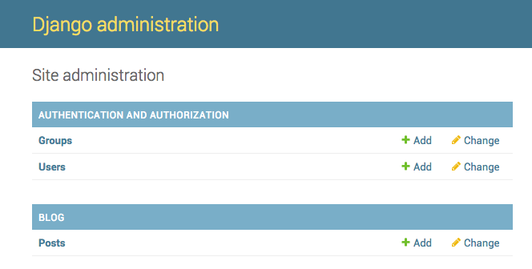

Django admin
To add, edit and delete the posts we've just modeled, we will use Django admin.
Let's open the
blog/admin.py
file in the code editor and replace its contents with this:
blog/admin.py
from django.contrib import admin
from .models import Post
admin.site.register(Post)
As you can see, we import (include) the Post model defined in the
previous chapter. To make our model visible on the admin page, we need
to register the model with
admin.site.register(Post)
.
OK, time to look at our Post model. Remember to run
python manage.py runserver
in the console to run the web server. Go to your browser and type the
address
http://127.0.0.1:8000/admin/
. You will see a login page like this:

To log in, you need to create a
superuser
- a user account that has control over everything on the site. Go back
to the command line, type
python manage.py createsuperuser
, and press enter.
Remember, to write new commands while the web server is running, open a new terminal window and activate your virtualenv. We reviewed how to write new commands in the Your first Django project! chapter, in the Starting the web server section.
macOS or Linux:
(myvenv) ~/djangogirls$ python manage.py createsuperuser
Windows:
(myvenv) C:\Users\Name\djangogirls> python manage.py createsuperuser
When prompted, type your username (lowercase, no spaces), email
address, and password.
Don't worry that you can't see the password you're typing in –
that's how it's supposed to be.
Type it in and press
enter
to continue. The output should look like this (where the username and
email should be your own ones):
Username: ola
Email address: ola@example.com
Password:
Password (again):
Superuser created successfully.
Return to your browser. Log in with the superuser's credentials you chose; you should see the Django admin dashboard.

Go to Posts and experiment a little bit with it. Add five or six blog posts. Don't worry about the content –- it's only visible to you on your local computer -- you can copy-paste some text from this tutorial to save time. :)
Make sure that at least two or three posts (but not all) have the publish date set. It will be helpful later.

If you want to know more about Django admin, you should check Django's documentation: https://docs.djangoproject.com/en/5.1/ref/contrib/admin/
This is probably a good moment to grab a coffee (or tea) or something to eat to re-energize yourself. You created your first Django model – you deserve a little break!